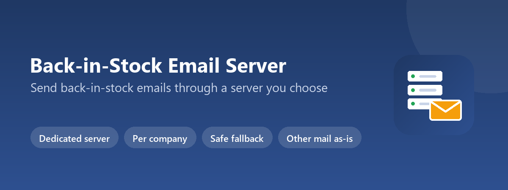

Send your online shop's back-in-stock emails through the outgoing mail server you choose.
Customers who ask to be told when a product is available again get that email through a server you pick in the Website settings, for example a marketing or bulk-mail account. Invoices, orders and every other email keep using your usual server.
📨 Dedicated serverPick the outgoing mail server for back-in-stock emails right in the Website settings. |
🏢 Per companyEach company can have its own server; shared products and companies without one follow the server of the website's company. |
🔒 Nothing else changesInvoices, order confirmations and all other emails keep going out exactly as they do today. |
🔄 Safe fallbackLeave the setting empty and back-in-stock emails are sent the normal way. |
Odoo 18.0 • Community & Enterprise • depends on eCommerce and Inventory • Licence LGPL-3
Odoo implementation and development. thecodelegion.com